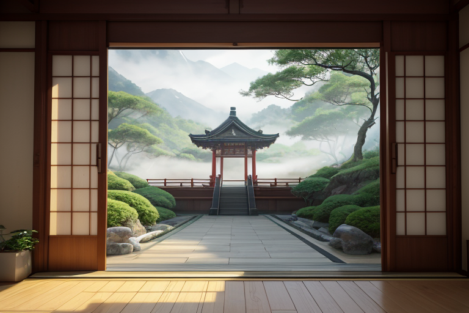
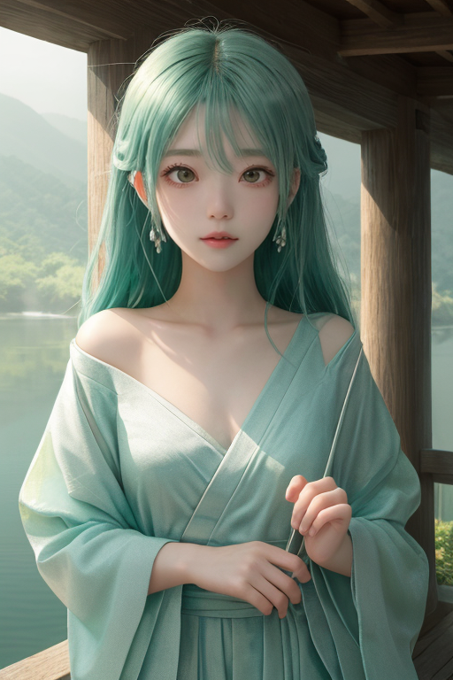
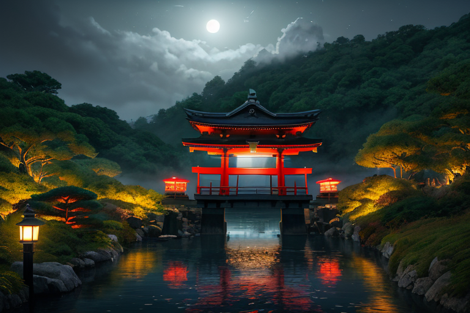
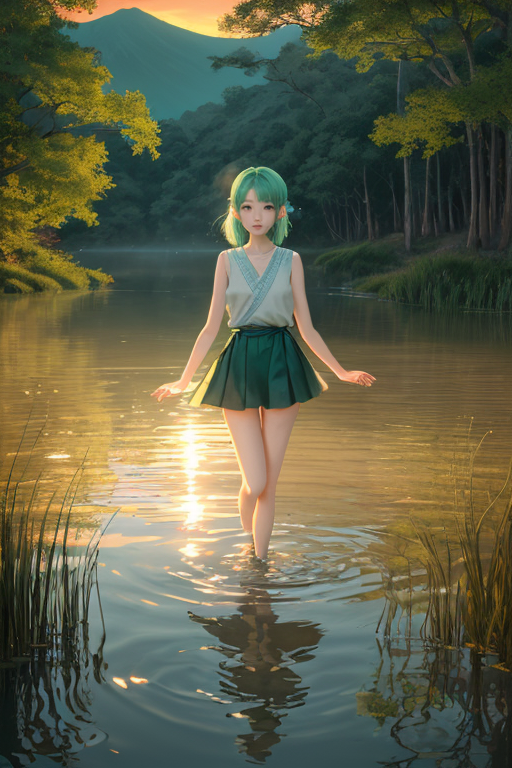
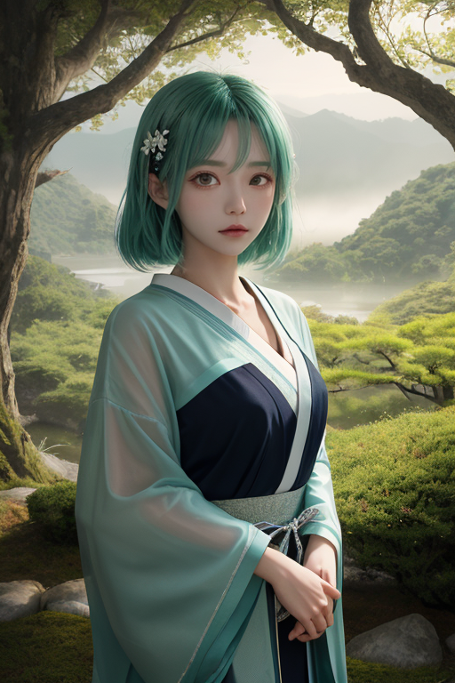

第一章 現実の茨城
あなたはまだ気づいていない。この土地にも、王がいることを。
筑波山の男体山頂。朝もやが立ち込める静寂の中、境界王イバラキア・フロンティアは目を閉じていた。深緑と銀の紋章が、彼の胸で微かに脈打つ。眼下には、研究学園都市の無機質な光と、霞ヶ浦の広大な水鏡、そして無数の田畑が織りなすパッチワークが広がる。ここは、最先端の実験と古代からの祈りが同居する、境界の地だ。
「歪み、感知。北緯36度付近、プレート境界に蓄積圧力、上昇中」
フロンティアの内面に、妖精フロンティの声が響く。感情を持たないはずの王の心に、一抹の「懸念」のようなものが掠めた。彼は右手を静かに掲げる。銀の光が指先から漏れ、目に見えない網の目となって地中へと降りていく。地震そのものを消すことはできない。だが、その衝撃が伝わる地盤の「境界」を、ほんの少しだけ柔らかく調整することはできる。次の瞬間、筑波山の岩肌を伝う風が、ほんの一呼吸、乱れた。

第二章 歪みの兆候
筑波山の静かな山肌を、祈りのエネルギーが流れていた。大洗磯前神社の鳥居の下、朝もやの中、無数の願いが海へと注がれる。フロンティアはその流れを掌に受け止める。通常、それは安定した静かな流れだ。しかし今、そこに微かな乱れが生じている。祈りの「密度」が、場所によって濃淡を生み、無意識の焦りや不安が混入していた。それは、目に見えない地中の歪みが、人々の無意識に影を落とし始めた兆候だった。
「祈りに、揺らぎが」
フロンティアは呟く。隣に立つフロンティが風を切り、報告する。「つくばの研究室でも、微妙なデータのぶれが三件。偶然の範囲内ですが、確率は低い」。王は目を閉じる。境界を越えるとは、物理的な亀裂だけではない。心の平穏と不安の、あの曖昧な境界線もまた、侵食され始めている。彼は調整を続ける。霞ヶ浦の水面に銀の輪を浮かべ、水の張力という境界を一時的に強化し、歪みの伝播を遅らせた。無感情のはずの胸の奥で、「このままではいけない」という確信が、静かに芽生え始めていた。

第三章「王の葛藤」
筑波山の山頂は、深夜の冷気に包まれていた。王は、眼下に広がる研究学園都市の無数の灯りを見下ろしながら、自らの内面という未知の領域と対峙していた。感情。それは、歪みを調整するための精密な計算を乱す雑音のはずだった。霞ヶ浦で水の張力を調整した時、なぜ「守りたい」という衝動が先立ったのか。袋田の滝の轟音を背景に、なぜ「孤独」という言葉が浮かんだのか。
彼は掌をかざした。深緑と銀の紋章が微かに輝く。これまで、この力は物理的な境界線――地層の断層、気圧の境目、水と陸の接点――を微調整するためにのみ使われてきた。しかし今、彼自身の内側に、理性と感情という新たな断層が生じている。水戸の偕楽園で梅の花を見た時、その美しさが「データ上の色彩分布」ではなく、「心を揺さぶるもの」として認識された。それは、明らかな越境だった。
「主君」とフロンティがそっと肩に止まる。「計算だけでは、この土地の『祈り』は計れません」。風の妖精の声は、いつになく静かだ。王は黙ったまま、大洗磯前神社の鳥居が荒波に立ち向かう姿を思い浮かべた。あの頑強さは、物理的強度だけではない。幾世代にもわたる人々の「想い」が、目に見えない補強材となっている。境界を越えたのは、彼だけではなかった。この土地そのものが、無機質な「調整対象」から、想いを宿す「守るべきもの」へと、彼の中で変容しつつあった。その変化は、恐ろしく、そして、どこか懐かしかった。

第四章 妖精との対話
霞ヶ浦の水面は、夕陽を吸い込み、静かな炎のように揺れていた。王の傍らで、風の妖精フロンティが囁いた。
「王様、あなたは変わられましたね」
「……そうか」
「以前のあなたは、『境界』を越えること自体が目的でした。つくばの研究都市で生まれる未来の萌芽を、ただ記録し、保護するだけでした。でも今は」フロンティは、湖面に浮かぶ葦の穂を見つめた。「この土地の人々が、干し芋を作り、納豆を挽き、あんこう鍋を囲みながら紡ぐ『日常』そのものを、未来の一部として見つめています」
王は答える必要がないと感じた。彼の沈黙が肯定だった。
「祈りとは、魂の方向付けです」トネリアが、水の流れのように静かに言葉を継いだ。「大洗の荒波も、袋田の滝の轟音も、筑波山の深い静寂も。それらに向けられる人々の想いは、無形の『力』となります。あなたが感じた『恐ろしさ』は、その力の重さ。『懐かしさ』は、あなたの魂が、ようやくその流れの中に位置を見出した証です」
境界を越えたのは、単なる観測者から、この地の感情の流れに参与する者へ。彼の中の静律線が、微かに、しかし確かに共振を始めていた。

第五章 微調整と余韻
筑波山の山頂は、夜明け前の深い静寂に包まれていた。イバラキア・フロンティアは、目を閉じ、掌をかざす。彼の前に広がるのは、霞ヶ浦の水面から、つくばの研究所の窓辺から、偕楽園の梅の木の下から、無数に立ち昇る微かな精神波の光だった。不安、期待、静かな決意、深い郷愁。茨城という境界の地に集う、無数の心のざわめき。
彼は調整者だ。災害を消せない。しかし、歪みが生じるその一瞬前に、流れをほんの少しだけ変えることはできる。巨大なプレートの軋みが、怒涛のエネルギーを解き放とうとするその時、彼は銀色の矢印を描く。境界線を越えるその軌跡が、地盤の共振を0.1秒遅らせ、破壊の波紋をほんのわずか、別の方へそらす。
彼は感情を持たないはずの王だった。だが今、掌に伝わるこの地の「想い」の温もりを、彼は「懐かしい」と感じていた。フロンティがそっと肩に止まり、トネリアが遠くの川面で微光を放つ。変わったのは、彼自身だった。観測者から、この地の感情の流れに参与する者へ。境界を越えた先にあったのは、静かな共鳴だった。
次の歪みは、まだ来ない。深緑と銀の王は、静寂の中に佇み、次の微調整の時を、ただ待つ。
あなたの町にも、王がいる。